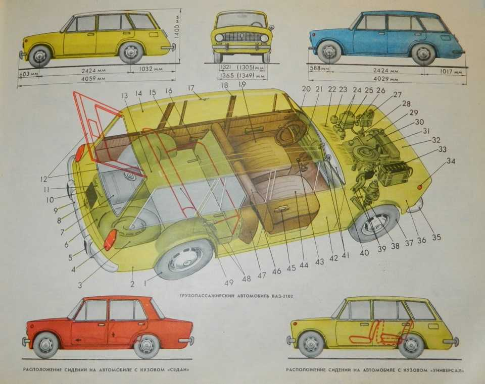

(«Двойка», «Двушка») — советский заднеприводный автомобиль с кузовом типа универсал.
Конструктивно — лицензионная копия универсала Fiat 124 Familiare (1966–1974), модернизированной
под более сложные дорожные условия.
Конструкция
ВАЗ-2102 — универсал, во многом унифицированный с базовым седаном ВАЗ-2101. Некоторые
особенности конструкции:
Двигатель: бензиновый, четырёхтактный, карбюраторный, рядный, с верхним расположением
распределительного вала.
Трансмиссия: механическая, четырёхступенчатая.
Ходовая часть: для большей грузоподъёмности пружины подвески и амортизаторы были дополнительно
усилены.

Кузов: остов кузова в задней части изменённой формы. Автомобиль имеет четыре боковых двери и
дверь задка. Дверь задка одностворчатая, с верхним расположением петель и неподвижным стеклом.
Освещение и сигнализация: задние фонари и фонарь освещения номерного знака другой конструкции.
Лампа освещения багажника заменена плафоном.
Сиденья: заднее сиденье другой конструкции. Подушка и спинка заднего сиденья откидываются для
увеличения пространства, занимаемого багажом.
Запасное колесо и шофёрский инструмент: размещают в отсеке под грузовой площадкой багажника.
Некоторые другие особенности конструкции:
Кромка двери багажника доведена до бампера и находится вровень с уровнем пола, что упрощает
операции по погрузке и разгрузке.
Сплошное заднее сиденье раскладываемое, что позволяет получить горизонтальную грузовую площадку.
Номерной знак находится на задней двери.
Технические характеристики
Новая модель была во многом унифицирована с базовым седаном ВАЗ-2101. Приборная панель и рабочее
место водителя идентичны таковым у ВАЗ-2101. Кромка двери багажника доведена до бампера и
находится вровень с уровнем пола, что упрощает операции по погрузке и разгрузке. Сплошное заднее
сиденье раскладываемое, что позволяет получить горизонтальную грузовую площадку. Номерной знак
находится на задней двери, задние фонари расположены вертикально. Технический уровень
универсалов в то время отличала слабая герметизация салона от пыли со стороны задней двери и
паров бензина через горловину бензобака. Для большего по массе грузопассажирского ВАЗ-2102
пружины подвески и амортизаторы были дополнительно усилены, что позволило сохранить
грузоподъемность в 250 кг с двумя пассажирами (или 60 кг с пятью пассажирами) при том, что
собственная масса автомобиля в сравнении с седаном ВАЗ-2101 возросла на 55 кг.
Автомобиль оснащался бензиновым двигателем мощностью 64 л. с., работающим на бензине АИ-93.
Вследствие того, что автомобиль имел большую грузоподъёмность, нежели седан, он комплектовался
колёсами с резиной большей ширины — 165 мм против 155 мм у ВАЗ-2101. Это изменение повлекло
увеличение диаметра колеса, которое компенсировали путём изменения главной пары с 4,3 до
4,44.
В 1978 году был начат выпуск модификации ВАЗ-21021 с четырёхцилиндровым 69-сильным двигателем
ВАЗ-21011.
Она предназначалась преимущественно для экспорта, так же, как и ВАЗ-21023 с карбюраторным
двигателем ВАЗ-2103 мощностью 77 л. с.
ВАЗ-21023 с задним дворником, экспортный вариант
В экспортном исполнении автомобиль ВАЗ-2102 оборудовали стеклоочистителем и омывателем стекла
задней грузовой двери, сиденьями от ВАЗ-2106 с подголовниками.
В дальнейшем завод провёл следующую модернизацию автомобилей:
до 1977 года на генераторах отрицательные диоды были запрессованы в крышку;
в 1983-м проведены изменения электрической части;
карбюраторы 2101 модернизировали в 1974-м и выпускали до 1976 года, третьей серии
2101-1107010-03 (типа «ВЕБЕР») — с 1976 no 1978 год. С 1980 года на машины монтировали новые
карбюраторы 2105-1107010-20 (типа «ОЗОН»), которые, по отзывам фактически всех автолюбителей,
хуже предыдущих.
Модификации
ВАЗ-2102 — базовая модель. Имела двигатель ВАЗ-2101 рабочим объёмом 1,2 л и мощностью 59 л. с.
ВАЗ-21021 — модификация, оснащённая двигателем ВАЗ-21011 рабочим объёмом 1,3 л и мощностью 69 л.
с.
ВАЗ-21021-01 — модификация, оснащённая двигателем ВАЗ-21011 рабочим объёмом 1,3 л, мощностью 69
л. с. и приборной панелью от ВАЗ-2103.
ВАЗ-21021-02 — модификация, оснащённая салоном и двигателем ВАЗ-21011 рабочим объёмом 1,3 л,
мощностью 69 л. с. и приборной панелью от ВАЗ-21011.
ВАЗ-21022 — модификация с правым расположением органов управления.
ВАЗ-21023 — модификация, оснащённая салоном и двигателем ВАЗ-2103 рабочим объёмом 1,45 л[4] и
мощностью 71 л. с.
ВАЗ-21024 — модификация, оснащённая двигателем ВАЗ-21011 рабочим объёмом 1,3 л, мощностью 69 л.
с., приборной панелью от ВАЗ-21011 и правым рулём.
ВАЗ-21026 — модификация, оснащённая салоном и двигателем ВАЗ-2103 рабочим объёмом 1,45 л[4] и
мощностью 71 л. с. и правым рулём.
ВАЗ-2102Э/2801 «Электро» — электромобили-фургоны, выпущенные тиражом в 47 экземпляров. Нагрузку
от никель-цинковых аккумуляторов воспринимала специальная алюминиевая рама.
Модель
Эту модель я залил у сабя на аккаунте. Модель на скачивание более детальна, но у неё нет текстуры. Из-за детальности я её выбрал для печати.